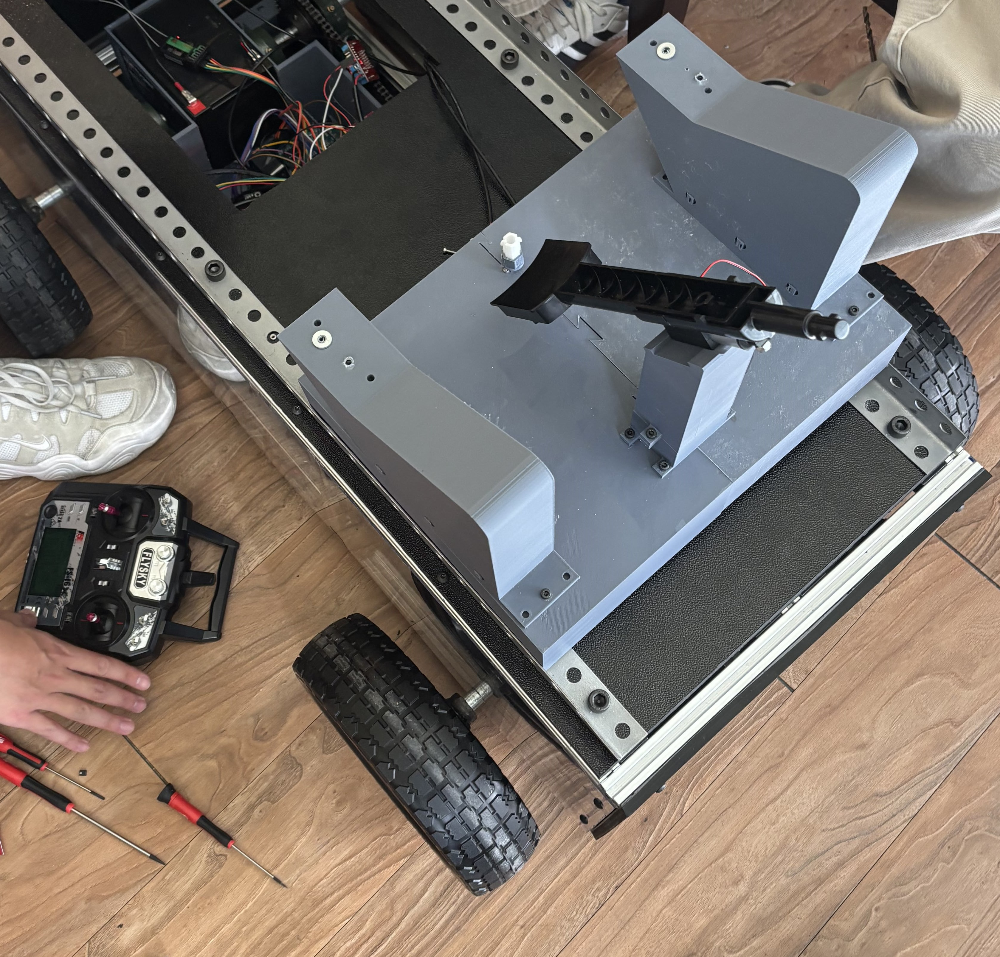

Senior Engineering Capstone Project – Texas A&M University
The Garden Cultivation Robot, GCR was developed to address the physical challenges associated with home gardening, especially for elderly and mobility-limited individuals. The team's goal was to create a modular, remotely-controlled robot capable of traversing a 50-foot garden row while delivering water and fertilizer to plants. Key design goals included modularity, maneuverability, durability, and ease of use.
The final prototype successfully achieved its core objectives. The robot features a modular aluminum 8020 chassis with ABS and PETG enclosures, a twin DC motor drivetrain using chain and sprocket assemblies, and two modular subsystems for watering and fertilizing. The electronic control system was built around a dual-Arduino master-slave architecture, ensuring responsive wireless remote control with minimal signal latency. Failure risk assessments, including FMECA and Fault Tree Analysis, identified drivetrain misalignment and battery depletion as key concerns; these risks were addressed through design modifications, rigorous mechanical assembly, and iterative electronic debugging. The robot met major performance targets, including a 0.01 m turning radius, a 26% improvement in consumable volume, and a final project cost of $2,301.97, remaining within the approved contingency budget.
Worked from concept to field-ready prototype, covering CAD, electronics, code, and testing.
Designed modular 8020 aluminum chassis.
Developed entire CAD assembly from concept to detailed drawings.
Developed dual-Arduino master-slave firmware with 2.4 GHz RF link for low-latency remote control.
| System Architecture
Sub-system
Hardware / Software
Why
Source
Chassis
8020 alu extrusion + ABS/PETG panels
Modular & weather-resistant
80/20 Inc.
Drivetrain
2 × 12 V DC gear-motors + chain & sprocket
High torque, tight turns
Pololu / Tsubaki
Watering
12 V water pumps + PVC piping
Precise metering
Autobonics
Fertilizing
Venturi spray nozzle
Uniform coverage
Custom
Controller
Arduino Uno (master) + Nano (slave) + nRF24L01
Low-latency RF
Arduino / Nordic
Power
12 V 9 Ah LiFePO₄
Long endurance
Bioenno Power
| Electronics & Control
Dual-Arduino architecture, wiring schematic, and custom RC remote.
A custom electronics housing was designed and 3D printed to securely mount the battery and electronic components within the chassis. The housing features dedicated compartments for the battery, Arduino controllers, and power distribution boards, improving cable organization and preventing interference with the moving chain drive system. The design incorporates mounting points for secure attachment to the 8020 frame and includes ventilation slots for thermal management.
CAD design and implementation of the custom electronics housing showing component layout and mounting features.
| Watering & Fertilizing Modules
| Manufacturing & Drivetrain
| Arduino Firmware Overview
The firmware is split across two sketches – Master_Code.ino on an Arduino Uno and Slave_Code.ino on an Arduino Nano. The Uno reads raw PWM signals from the FlySky FS-i6X receiver, steers the drivetrain at 75 Hz, and forwards any plant-care commands to the Nano over a 400 kHz I2C bus (address 0×08). The Nano in turn drives the high-current actuator, pumps, and conveyor motor so power wiring stays short and serviceable.
Master Code (Arduino Uno)
// ───────── Motor Pins ─────────
#include
// Define Motor A (Right Motor) Pins
#define PWM_A 9
#define A1 7
#define A2 6
// Define Motor B (Left Motor) Pins
#define PWM_B 10
#define B1 11
#define B2 12
// Receiver input pins for motor control
const int steeringPin = 2;
const int throttlePin = 3;
// RC input channels
#define CHANNEL_PIN 5 // FS-i6X channel for pump control
const int actuatorPin = 13; // Actuator control signal
const int motorPin = 4; // 12V motor control signal
// Input pulse range (FS-i6X default)
#define PULSE_MIN 980
#define PULSE_MAX 1980
// Motor speed range
#define SPEED_MIN -255
#define SPEED_MAX 255
// Deadzone threshold
#define DEADZONE 20
// Timing for non-blocking execution
unsigned long lastUpdate = 0;
const int updateInterval = 50;
// === Latency Testing Variables ===
unsigned long lastSignalTime = 0;
float latencySum = 0;
unsigned long latencyCount = 0;
float maxLatency = 0;
unsigned long startTime = 0;
const unsigned long loggingDurationMs = 30000; // Log for 30 seconds
bool latencyDone = false;
void setup() {
startTime = millis();
Serial.println("Time(ms),Latency(ms)");
Serial.begin(9600);
Wire.begin(); // Start I2C as master
// Set motor control pins as outputs
pinMode(PWM_A, OUTPUT);
pinMode(A1, OUTPUT);
pinMode(A2, OUTPUT);
pinMode(PWM_B, OUTPUT);
pinMode(B1, OUTPUT);
pinMode(B2, OUTPUT);
// Set receiver input pins
pinMode(steeringPin, INPUT);
pinMode(throttlePin, INPUT);
pinMode(CHANNEL_PIN, INPUT);
pinMode(actuatorPin, INPUT);
pinMode(motorPin, INPUT);
}
void loop() {
if (!latencyDone) {
pulseIn(steeringPin, HIGH);
unsigned long now = micros();
float latency = (now - lastSignalTime) / 1000.0;
lastSignalTime = now;
if (latencyCount > 0) {
latencySum += latency;
if (latency > maxLatency) maxLatency = latency;
Serial.print(millis());
Serial.print(",");
Serial.println(latency, 3);
}
latencyCount++;
if (millis() - startTime >= loggingDurationMs) {
latencyDone = true;
float averageLatency = latencySum / (latencyCount - 1);
Serial.println();
Serial.println("=== Summary ===");
Serial.print("Average Latency (ms): ");
Serial.println(averageLatency, 3);
Serial.print("Max Latency (ms): ");
Serial.println(maxLatency, 3);
Serial.println("================");
}
}
if (millis() - lastUpdate >= updateInterval) {
lastUpdate = millis();
int throttle, steering, pumpSignal;
readInputs(throttle, steering, pumpSignal);
int rightMotorSpeed, leftMotorSpeed;
calculateMotorSpeeds(throttle, steering, rightMotorSpeed, leftMotorSpeed);
applyMotorSpeeds(rightMotorSpeed, leftMotorSpeed);
// Read signals and send to slave arduino
int actuatorSignal = pulseIn(actuatorPin, HIGH);
int motorSignal = pulseIn(motorPin, HIGH);
sendToSlave(actuatorSignal, motorSignal, pumpSignal);
debugOutput(throttle, steering, rightMotorSpeed, leftMotorSpeed, pumpSignal, actuatorSignal, motorSignal);
}
}
void readInputs(int &throttle, int &steering, int &pumpSignal) {
throttle = pulseIn(throttlePin, HIGH);
steering = pulseIn(steeringPin, HIGH);
pumpSignal = pulseIn(CHANNEL_PIN, HIGH);
throttle = map(throttle, PULSE_MIN, PULSE_MAX, SPEED_MIN, SPEED_MAX);
steering = map(steering, PULSE_MIN, PULSE_MAX, SPEED_MIN, SPEED_MAX);
throttle = (abs(throttle) < DEADZONE) ? 0 : throttle;
steering = (abs(steering) < DEADZONE) ? 0 : steering;
}
void calculateMotorSpeeds(int throttle, int steering, int &rightMotorSpeed, int &leftMotorSpeed) {
if (throttle == 0) {
rightMotorSpeed = -steering;
leftMotorSpeed = steering;
} else {
rightMotorSpeed = constrain(throttle - steering / 2, SPEED_MIN, SPEED_MAX);
leftMotorSpeed = constrain(throttle + steering / 2, SPEED_MIN, SPEED_MAX);
if (steering == 0) {
rightMotorSpeed = leftMotorSpeed = throttle;
}
}
}
void applyMotorSpeeds(int rightMotorSpeed, int leftMotorSpeed) {
setMotorSpeed(PWM_A, A1, A2, rightMotorSpeed);
setMotorSpeed(PWM_B, B1, B2, -leftMotorSpeed); // Inverted for tank drive
}
void setMotorSpeed(int pwmPin, int pin1, int pin2, int speed) {
digitalWrite(pin1, speed > 0);
digitalWrite(pin2, speed < 0);
analogWrite(pwmPin, abs(speed));
}
// NEW: Send actuator, motor, and pump signals to slave arduino
void sendToSlave(int actuatorSignal, int motorSignal, int pumpSignal) {
Wire.beginTransmission(8); // Slave address
Wire.write((byte)(actuatorSignal >> 8));
Wire.write((byte)(actuatorSignal & 0xFF));
Wire.write((byte)(motorSignal >> 8));
Wire.write((byte)(motorSignal & 0xFF));
Wire.write((byte)(pumpSignal >> 8));
Wire.write((byte)(pumpSignal & 0xFF));
Wire.endTransmission();
}
void debugOutput(int throttle, int steering, int rightMotorSpeed, int leftMotorSpeed,
int pumpSignal, int actuatorSignal, int motorSignal) {
Serial.print("Throttle: "); Serial.print(throttle);
Serial.print(" | Steering: "); Serial.print(steering);
Serial.print(" | Left Motor: "); Serial.print(leftMotorSpeed);
Serial.print(" | Right Motor: "); Serial.print(rightMotorSpeed);
Serial.print(" | Pump: "); Serial.print(pumpSignal);
Serial.print(" | Actuator: "); Serial.print(actuatorSignal);
Serial.print(" | Motor: "); Serial.println(motorSignal);
}
}
Reliability – 60-hour endurance run with zero drivetrain or electronics failures.
FEA – Aluminum 6061 Yield Strength: 5.515e7 Nsm. Horizontal load force: 83.4 lbf (equivalent to 10 gallon water weight). FOS: 3.78. 7 screw connections along 20 inch tank span length.
| Impact & Lessons Learned
Bringing GCR from blank sheet to field test deepened my appreciation for end-to-end systems thinking:
translating user pain-points into requirements, validating them with FMECA, and closing the loop with
instrumented field trials. I gained hands-on experience in design-for-assembly (8020 framing, chain
alignment jigs) and design-for-serviceability (tool-free module swaps). Debugging the dual-Arduino
firmware taught me the value of layered diagnostics and watchdog timers. Working with a cross-functional team
hardened my soft skills—weekly design reviews, Gantt tracking, and rapid knowledge sharing turned five students
into a cohesive engineering unit.
TL;DR – Built a modular dual-Arduino garden robot that waters & fertilizes 50 ft rows, hits 0.01 m turns, and boosts capacity by 26 % — all under budget.
| Gallery
ISO view during final assembly – shows modular 8020 frame and protective side panels.Top-down look highlighting water & fertilizer tanks and dual-Arduino enclosure.Side profile illustrating compact ground clearance and chain-drive layout.

Close-up of the 100 mm linear actuator responsible for fertilizer hatch-dispense control.Drivetrain bench-test – twin 12 V gear-motors wired through a 60 A H-bridge.Custom 3-D printed motor-shaft adapter that aligns fertilizer disc motor.Field trial clip.
| Engineering Drawings Appendix
Drawing 1: AndyMark CIM Motor with 16-tooth pinion - Primary drive motor with integrated pinion gear for chain drive system.Drawing 2: AndyMark CIM Planetary Gearbox - High-torque planetary gearbox for motor speed reduction and torque multiplication.Drawing 3: 15-tooth motor shaft sprocket - Drive sprocket mounted on motor output shaft for chain drive system.Drawing 4: 45-tooth wheel shaft sprocket - Driven sprocket mounted on wheel shaft, providing 3:1 speed reduction.Drawing 5: Block Bearing for Wheel and Motor shafts - Pillow block bearing assembly for supporting rotating shafts.Drawing 6: Submersible Water Pump - 12V DC submersible pump for water delivery system.